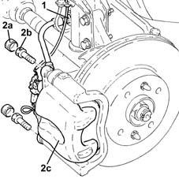
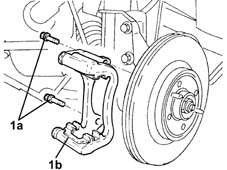
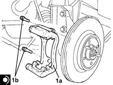
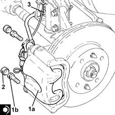

3310A57 front brake calliper bracket - r r
- Path
- Procedures > 33 BRAKING SYSTEM > 3310 DISC BRAKES > 3310A FRONT DISC BRAKES > 3310A57 front brake calliper bracket - r r
- Kind
- repair procedure (removal / refitting; the operation number is the code)
- Applies to
- all engines; all production periods
- Interactive page
- https://sloeber94.github.io/elrnDB-lYpsln/en/#/2429155
Applies to: all engines; all production periods
 Removing
Removing
 Refitting
RefittingPosition the vehicle on the ramp.
FOR LEFT BRAKE DISC
Proceed with removal 4450B02 left front wheel r r .
FOR RIGHT BRAKE DISC
Proceed with removal 4450B04 right front wheel r r .
1. Release the block of the hose to the front brake caliper from the fastener on the front shock absorber.
2. Remove plugs (2a), undo the bolts (2b) and move the front brake caliper assembly (3c) to one side.

Applies to: all engines; all production periods
1. Undo the bolts (1a) and remove the front brake caliper bracket (1b).

Applies to: all engines; all production periods
Refitting
Removing1. Place the front brake caliper bracket (1a) back in its housing and fix it tightening the bolts (1b) to the recommended torque.
 | Fastening | Component | Ø | Value (daNm) |
|---|---|---|---|---|
1b | Bolt | FRONT BRAKE CALIPER BRACKET | M12 | (Stub axle side) 10.0 ÷ 11.0 |

Applies to: all engines; all production periods
1. Refit the rear brake caliper assembly (1a) and tighten the bolts (1b) to the specified torque.
| Fastening | Component | Ø | Value (daNm) |
|---|---|---|---|---|
1b | - | - | - | - |
2. Refit the front brake caliper bolt plugs.
3. Secure the block of the hose to the front brake caliper to the fastener on the front shock absorber.

Applies to: all engines; all production periods
FOR RIGHT BRAKE DISC
Proceed with refitting 4450B04 right front wheel r r .
FOR LEFT BRAKE DISC
Proceed with refitting 4450B02 left front wheel r r .
Remove the car from the ramps.